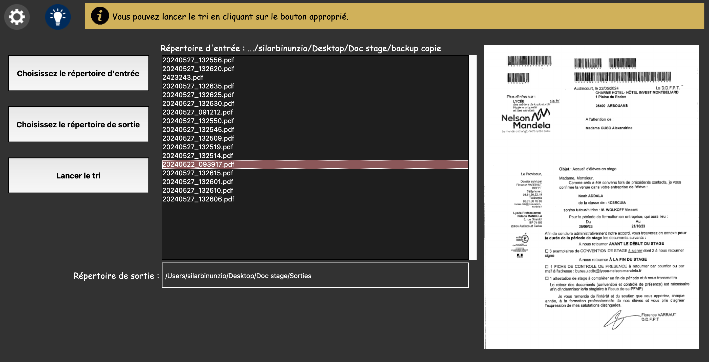
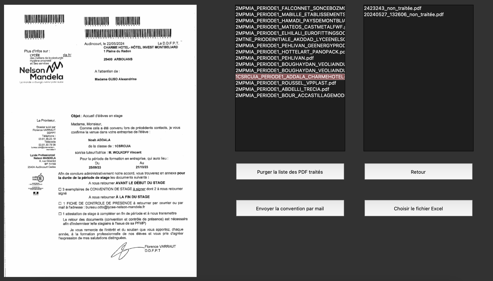

Compétence 1
Réaliser un développement d’application
La consigne du premier projet qui m'a été donné a été de créer une application permettant de scanner des PDF en fonction de codes-barres pour ainsi faire gagner du temps à mon maître de stage dans ses travaux annuels. L'application devait renommer les PDF puis les classer dans les bons dossiers.
Ce projet m'a permis de me concentrer sur deux partie de cette compétence :
Développer des applications informatiques simples
Cela m'a énormément fait progresser sur bien des aspects comme l'implémentation de conceptions simples ainsi que leur élaboration. Surtout, ce sur quoi ce projet m'a apporté le plus de compétences a été le fait de développer des interfaces utilisateurs afin de les rendre le plus claires possible pour quelqu'un d'extérieur au projet.

Partir des exigences et aller jusqu’à une application complète
De ce côté-là, j'ai pris l'habitude de faire des retours régulièrement à mon maître de stage afin de ne pas m'éloigner de ses besoins. Aussi, j'ai beaucoup appris sur l'élaboration et l'implémentation des exigences de mes supérieurs, tout en améliorant mes compétences en termes d'accessibilité et d'ergonomie.
